SliplinesSliplinesSliplinesSliplines
Okları tahtadan çıkar! Her gün yeni bulmaca, internetsiz oynanır.Arrow escape puzzle: slide every arrow out. New daily puzzle, plays offline!Puzle de flechas: saca todas del tablero. Reto diario y sin conexión.Quebra-cabeça de setas: tire todas do tabuleiro. Desafio diário e offline!
Her ok dışarı çıkmak istiyor. Doğru sırayı bulabilecek misin? Sliplines sakin ama zekice bir ok bulmacası ve zeka oyunu. Her tahta, köşe dönen oklarla dolu. Bir oka dokun: başının önünde kenara kadar hiçbir şey yoksa ok, kendi yolunu izleyerek tahtadan kayıp çıkar. Önünde başka bir ok varsa bir can gider. Tahtayı boşalt, seviyeden kaç.Every arrow wants out. Can you find the right order? Sliplines is a calm, clever arrow puzzle and brain teaser. Each board is packed with winding arrows. Tap an arrow and, if nothing blocks its head all the way to the edge, it slides off the board along its own path. If another arrow is in the way, you lose a heart. Clear the board to escape the level.Todas las flechas quieren salir. ¿Sabrás encontrar el orden correcto? Sliplines es un puzle de flechas tranquilo e ingenioso, un rompecabezas de lógica para entrenar la mente. Cada tablero está lleno de flechas que se curvan y giran. Toca una flecha y, si nada bloquea su cabeza hasta el borde, saldrá del tablero siguiendo su propio camino. Si otra flecha se interpone, pierdes un corazón. Despeja el tablero para escapar del nivel.Todas as setas querem sair. Você consegue achar a ordem certa? Sliplines é um quebra-cabeça de setas tranquilo e inteligente, um jogo de lógica para exercitar a mente. Cada tabuleiro está cheio de setas que fazem curvas. Toque em uma seta e, se nada bloquear a cabeça dela até a borda, ela desliza para fora seguindo o próprio caminho. Se outra seta estiver no caminho, você perde um coração. Limpe o tabuleiro para escapar do nível.


Ekran görüntüleriScreenshotsCapturas de pantallaCapturas de tela
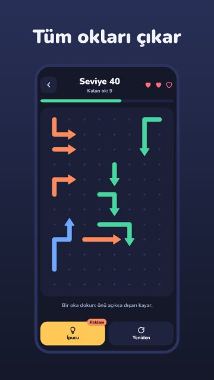
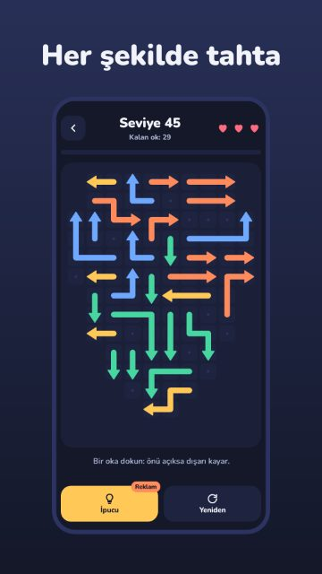
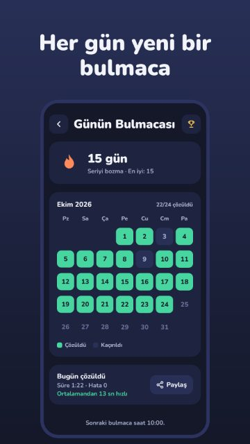
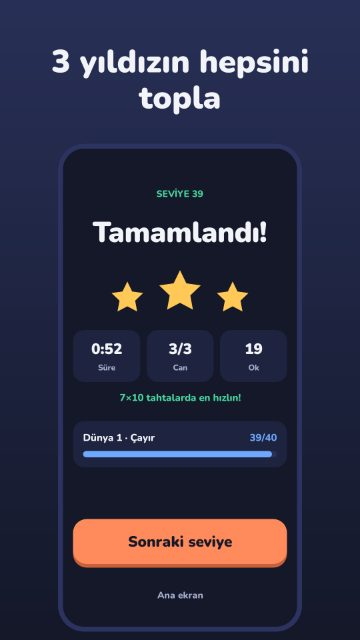
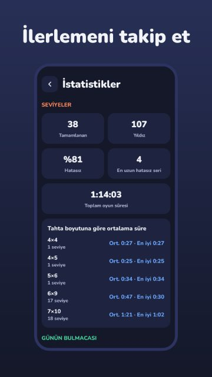
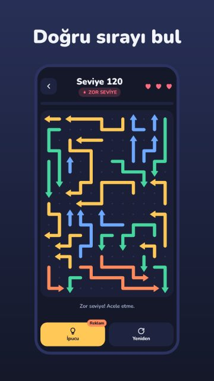
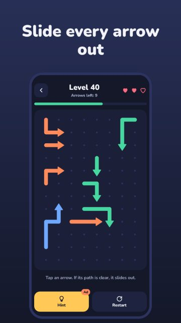
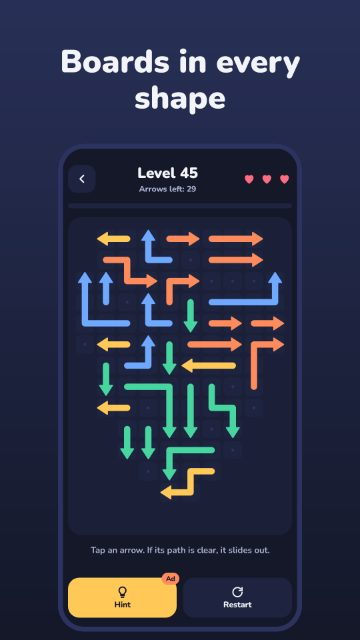
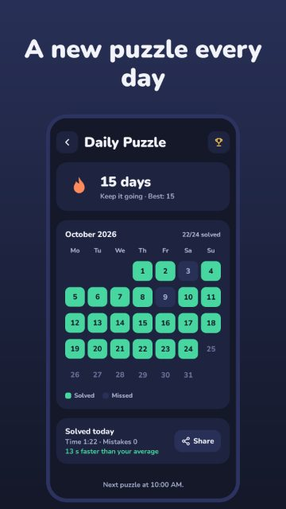
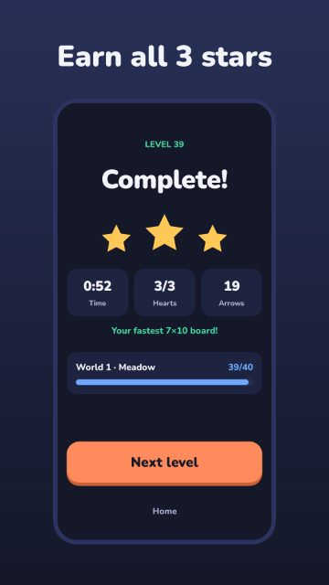
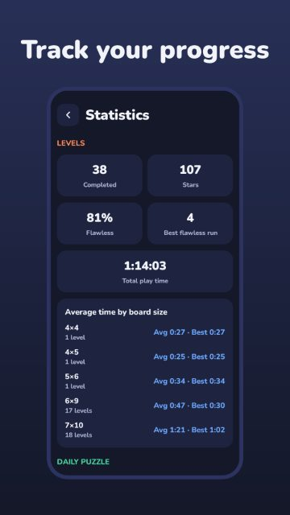
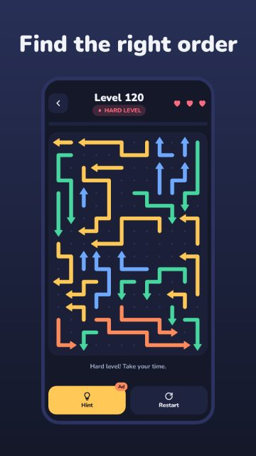
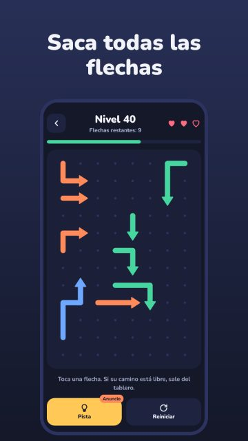
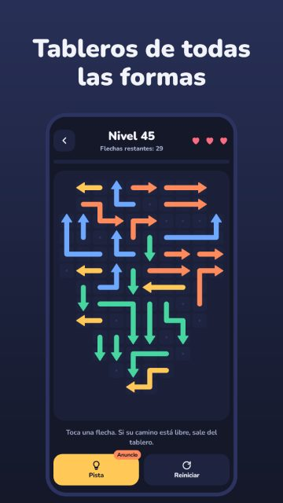
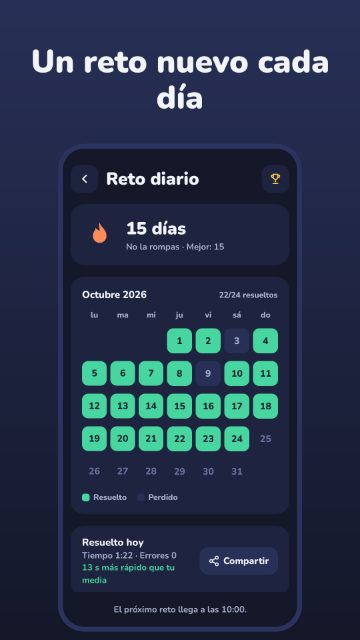
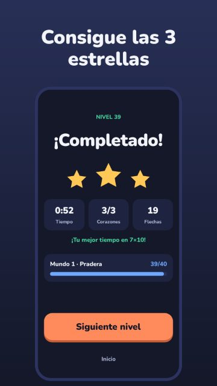
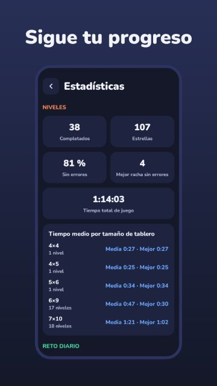
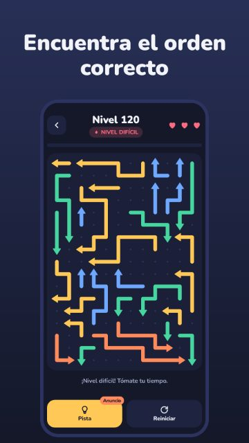
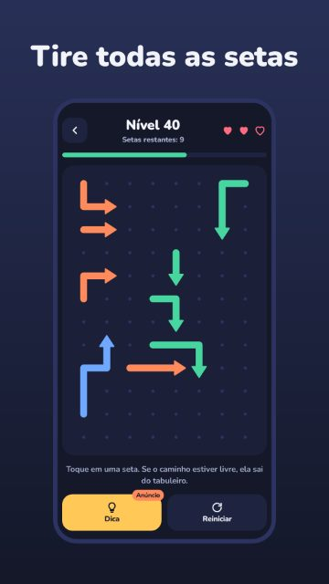
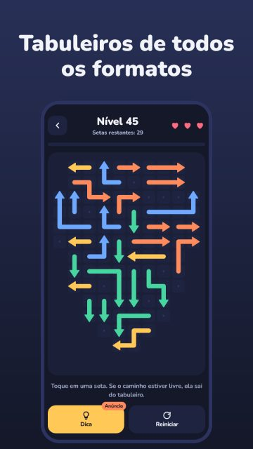
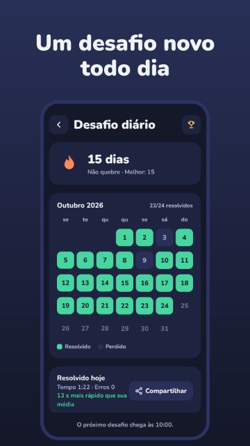
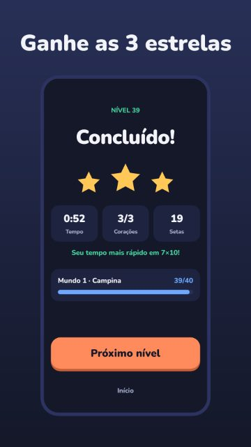
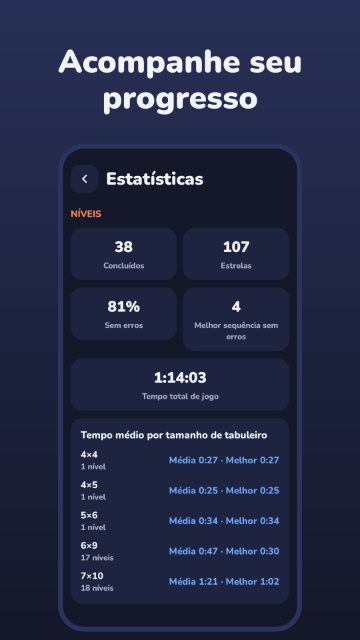
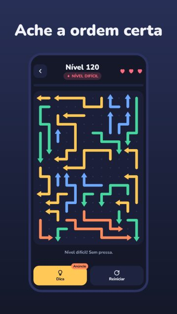
ÖzelliklerFeaturesCaracterísticasRecursos
Tek dokunuşla oyna: acele ettiren süre yok, karmaşık kural yokOne tap to play: no timers pushing you, no complicated rulesSe juega con un toque: sin prisas ni reglas complicadasJogue com um toque: sem pressa e sem regras complicadas
Oklar kıvrılıp döner, doğru sıra hiçbir zaman ilk bakışta belli olmazArrows bend and turn, so the order is never obviousLas flechas se curvan, así que el orden nunca es obvioAs setas fazem curvas, então a ordem nunca é óbvia
Tahtalar sen ilerledikçe 4×4'ten 12×17'ye büyürBoards grow from 4×4 to 12×17 as you get betterLos tableros crecen de 4×4 a 12×17 a medida que mejorasOs tabuleiros crescem de 4×4 até 12×17 conforme você melhora
Şekilli tahtalar: halka, kalp, elmas, artı ve daha fazlasıShaped boards: rings, hearts, diamonds, crosses and moreTableros con formas: anillos, corazones, rombos, cruces y másTabuleiros com formatos: anéis, corações, losangos, cruzes e mais
Her seviye çözülebilir olarak kontrol edilir, haksız bulmaca yokEvery level is checked to be solvable, so no unfair puzzlesCada nivel está comprobado: siempre tiene soluciónTodo nível é verificado: sempre tem solução
Tahtanın tamamı her zaman ekrana sığar, yakınlaştırma gerekmezThe whole board always fits your screen, no zoomingEl tablero completo siempre cabe en la pantalla, sin zoomO tabuleiro inteiro sempre cabe na tela, sem zoom
Hassas dokunma: biraz ıskalasan da en yakın ok seçilirPrecise touch: a near-miss picks the closest arrow, so you don't lose hearts to stray tapsToque preciso: si fallas por poco, se elige la flecha más cercanaToque preciso: se errar por pouco, a seta mais próxima é escolhida
Her gün yeni bir bulmaca, herkes için aynı tahtaA new puzzle every day, the same board for everyoneUn puzle nuevo cada día, el mismo tablero para todosUm quebra-cabeça novo todo dia, o mesmo tabuleiro para todos
Serini koru, takvimini doldurKeep your streak going and fill your calendarMantén tu racha y completa tu calendarioMantenha sua sequência e complete seu calendário
Süreni ve canlarını arkadaşlarınla paylaşShare your time and hearts with friends, Wordle styleComparte tu tiempo y tus corazones con tus amigosCompartilhe seu tempo e seus corações com os amigos
Kısa, isteğe bağlı bir reklam izleyerek ipucu ya da ek can alGet a hint or an extra heart by watching a short optional adConsigue una pista o un corazón extra viendo un anuncio corto y opcionalGanhe uma dica ou um coração extra assistindo a um anúncio curto e opcional
Zor bir seviyeyi reklam izleyerek atla, yoluna devam etSkip a hard level with an ad and keep movingSalta un nivel difícil con un anuncio y sigue avanzandoPule um nível difícil com um anúncio e continue jogando
Hatasız bitirene 3 yıldız3 stars for a flawless clear3 estrellas si terminas sin errores3 estrelas quando você termina sem erros
16 rozet topla, Google Play Oyunlar başarımı olarak daCollect 16 badges, also as Google Play Games achievementsColecciona 16 insignias, también como logros de Google Play JuegosColecione 16 medalhas, também como conquistas do Google Play Games
İstatistikler: hatasız seviye oranı, en uzun seriler, tahta boyutuna göre ortalama süreStatistics: flawless rate, best runs, average time by board sizeEstadísticas: niveles sin errores, mejores rachas, tiempo medio por tamaño de tableroEstatísticas: níveis sem erros, melhores sequências, tempo médio por tamanho de tabuleiro
Her seviyeden sonra kendi ortalamanla kıyaslaSee how you compare to your own average after every levelCompárate con tu propia media después de cada nivelCompare com a sua própria média depois de cada nível
İnternetsiz çalışır: yolda, sırada, kafede rahatlatıcı bir mantık bulmacasıWorks offline: a relaxing logic puzzle for the commute, no Wi-Fi neededFunciona sin conexión: un juego de lógica relajante para el trayecto, sin Wi-FiFunciona offline: um jogo de lógica relaxante para o trajeto, sem Wi-Fi
Küçük boyutSmall downloadDescarga ligeraDownload leve
Türkçe, English, Español ve PortuguêsEnglish, Español, Português and TürkçeEspañol, English, Português y TürkçePortuguês, English, Español e Türkçe
Sliplines ücretsizdir ve reklam içerir.Sliplines is free to play and contains ads.Sliplines es gratuito y contiene anuncios.Sliplines é gratuito e contém anúncios.